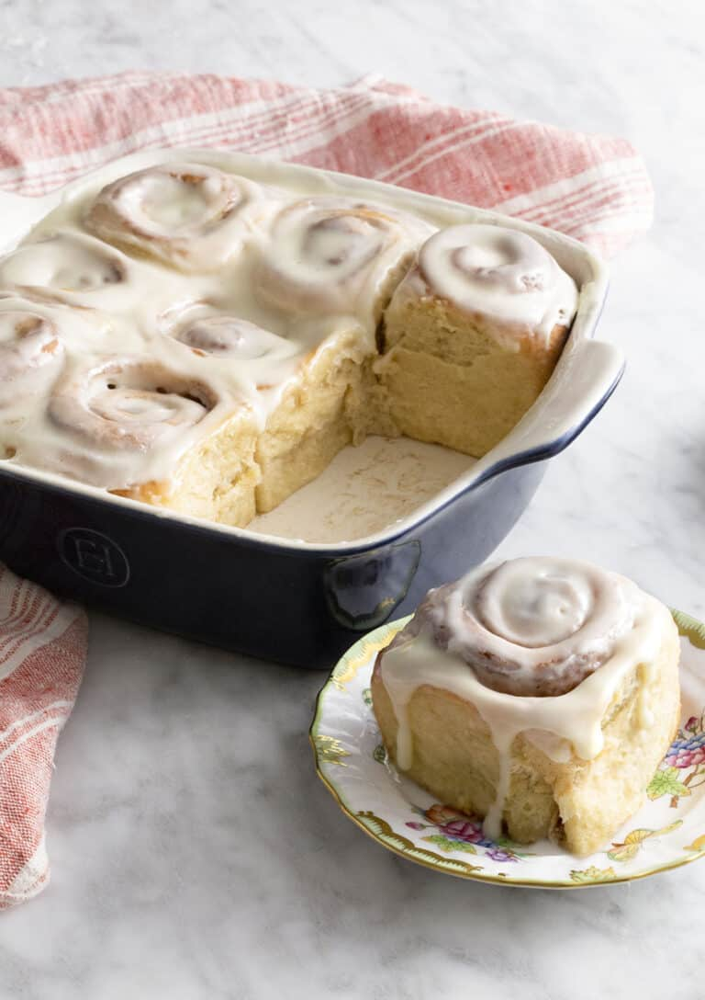

Cinnamon Rolls

Description
These pillowy soft and luscious homemade cinnamon rolls topped with a perfect cream cheese glaze are the ultimate morning treat and so easy to make! They're big, fluffy, gooey and you can make them as overnight rolls!
Equipment
- 9"x9" baking dish or larger
Ingredients
For the dough
- 3 1/2 cups all-purpose flour, 420g
- 1/4 cup granulated sugar, 50g
- 1/4 cup light brown sugar, 50g
- 1 tsp salt
- 2 1/4 tsp instant yeast
- 1 tsp cinnamon
- 1 pinch nutmeg
- 1 large egg, room temp
- 1/2 cup milk, 120mL
- 1 tbsp vanilla extract, 15mL
- 1/2 cup sour cream, 120g
- 6 tbsp unsalted butter, 85g
For the filling
- 4 tbsp butter, room temp, 57g
- 3 tbsp granulated sugar
- 2 tbsp light brown sugar
- 1 tbsp cinnamon
For the glaze
- 4 oz cream cheese, room temp, 114g
- 2 tbsp butter, room temp, 28g
- 1 tbsp vanilla extract, 15mL
- 1 pinch salt
- 1 tsp lemon juice, 5mL
- 2 cups powdered sugar, 200g
- 1 tbsp milk, plus more if needed for consistency
Steps
For the cinnamon sugar:
- Mix cinnamon and the two sugars in a bowl then set aside.
For the rolls:
- In the bowl of your stand mixer add the flour, salt, spices, and sugars and yeast then whisk together to combine and set aside.
- In a separate bowl add the milk, butter, vanilla, and sour cream. Microwave until warm to the touch (about 110F) and stir until butter is melted.
- Attach a dough hook to the mixer and pour the wet mixture into the dry then run on low. Drop the egg in and mix until the dough comes together and it's tacky but doesn't stick to your fingers.
- Dump dough out onto a floured surface and knead for about 5 minutes, sprinkling with additional flour as needed then transfer to a large oiled bowl. Cover and allow to rise in a warm place. This is a very enriched dough so the yeast will take a bit of time to get going but the dough will more than double in size.
- On a well-floured surface roll the dough out to a rectangle that’s 1/4 an inch thick. Spread the room temperature butter over the surface leaving a little less than an inch at one of the narrow sides. If you choose the wider side for the unbuttered strip then you'll end up with more cinnamon rolls, but they will be smaller.
- Sprinkle generously with the cinnamon sugar then roll the side of the dough across from the to create a spiral starting from the opposite ens of the unbuttered strip.
- Cut the dough into even pieces about an inch and a half long. You can use a length or dental floss that you loop around the roll then pull or just use a sharp knife
- Place the rolls cut side up in a baking dish and allow to rest in a warm place for about 40 minutes for a final rise. Make the glaze while the rolls are rising or during the bake.
- Heat oven to 350F and Bake for about 28-30 minutes or until lightly browned on top. If your rolls are getting a bit too brown at the 20 minute mark then cover loosely with foil and continue to bake.
For the glaze:
- Place the cream cheese, butter, vanilla, salt, lemon juice and a tablespoon of milk in a bowl and beat until smooth. You can also make this VERY easily in a small food processor if you have one. Once smooth add the powdered sugar and beat once more until fully incorporated. You can mix in an additional tablespoon or two of milk if you prefer a thinner frosting. Drizzle about half of the glaze over the cinnamon rolls RIGHT after you pull them from the oven then add the remaining glaze once cooled or on individual pieces when serving.